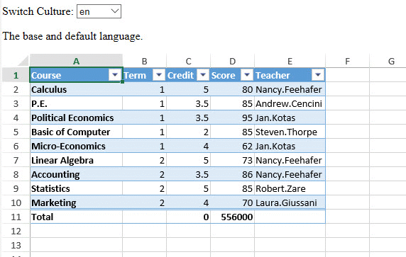
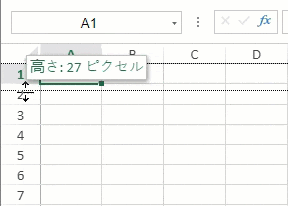

SpreadJS supports custom localization apart from the 18+ available language packages.
You can define custom languages and modify existing language packages to display words or phrases as per your specific preferences.
Creating and using a custom language package is useful especially when users need to work with regional date and time formats while working in different locales.
You can localize function names, work with custom functions, define table functions, customize table formula keywords, CalcError phrases, boolean values and work with special function logic in your preferred language.
You can use the culture() method and addCultureInfo() method of the CultureManager class to work with custom language packages.
The following GIF illustrates some custom-defined language packages below.

The following example code shows how to use a custom language package.
| JavaScript |
Copy Code
|
|---|---|
<!DOCTYPE html> <html> <head> <script src="https://code.jquery.com/jquery-2.1.1.min.js" type="text/javascript"></script> <link href="css/gc.spread.sheets.excel2013white.12.2.0.css" rel="stylesheet" /> <script src="scripts/gc.spread.sheets.all.12.2.0.min.js"></script> <script src="scripts/demo.js"></script> <script src="scripts/resource.js"></script> <script> $(document).ready(function () { // Initializing Spread var spread = new GC.Spread.Sheets.Workbook(document.getElementById('ss'), { sheetCount: 1 }); // Fetch ActiveSheet sheet = spread.getSheet(0); spread.suspendPaint(); spread.options.showScrollTip = 3; spread.options.showResizeTip = 3; var table = sheet.tables.addFromDataSource("table1", 0, 0, source, GC.Spread.Sheets.Tables.TableThemes.medium2) table.showFooter(true); table.showHeader(true); table.highlightFirstColumn(true); table.setColumnFormula(3, "=SUM(D4:D12)"); table.setColumnFormula(2, "=SUM(E4:E12)"); table.setColumnValue(0, "Total"); sheet.setColumnWidth(0, 130); sheet.setColumnWidth(4, 100); spread.resumePaint(); GC.Spread.Common.CultureManager.addCultureInfo("de", null, de); GC.Spread.Common.CultureManager.addCultureInfo("zh_tw", null, zh_tw); GC.Spread.Common.CultureManager.addCultureInfo("fr", null, fr); GC.Spread.Common.CultureManager.addCultureInfo("ha_ha", null, ha_ha); spread.resumePaint(); var select = document.getElementById('CultureSelect'); select.onchange = function () { debugger; var culture = this.value; GC.Spread.Common.CultureManager.culture(culture); $("#l_description").text(langDescription[culture]); $("#language").val(JSON.stringify(window[culture], null, 2)); } }); </script> </head> <body> <div id="settingsDiv"> Switch Culture: <select id="CultureSelect"> <option value="en">en</option> <option value="zh_tw">zh-tw</option> <option value="fr">fr</option> <option value="de">de</option> <option value="ha_ha">Ha-Ha</option> </select> </div> <p id="l_description">The base and default language.</p> <div id="ss" style="height:400px;width:600px"></div> <textarea id="language" cols="85" rows="40" style="max-width: 98%" readonly="readonly"></textarea> </body> </html> |
|
You can customize existing language packages and translate them into a particular language. It is useful, especially when you only require a specific spreadsheet element to display a different text.
You can use the CultureManager.getResources method to get the current or specified culture resources. This method returns the current working language or the specified language package.
After getting the language package, you can follow the steps below to apply the modified package to Spread:
Note: If you add a custom language by the addCultureInfo method, you cannot get this resource immediately, until changing the current culture to custom culture using CultureManager.culture method.
Alternatively, you can use CultureManager.getLanguage method directly.
The following GIF illustrates the use of a specific Chinese string (in width scrolltip) with Japanese language package.

The following example code shows how to modify and use an existing language package.
| JavaScript |
Copy Code
|
|---|---|
// Configure Workbook and Worksheet var spread = new GC.Spread.Sheets.Workbook("ss"); var sheet = spread.getActiveSheet(); // Show resize tip for row height and column width spread.options.showResizeTip = GC.Spread.Sheets.ShowScrollTip.both; // Get the specified culture resources var originResources = GC.Spread.Common.CultureManager.getResources("ja-jp"); // Change the culture based on the origin culture resources. originResources.Sheets.Tip_Width = "宽度： {0} 像素"; GC.Spread.Common.CultureManager.addCultureInfo("custom", null, originResources); GC.Spread.Common.CultureManager.culture("custom"); |
|